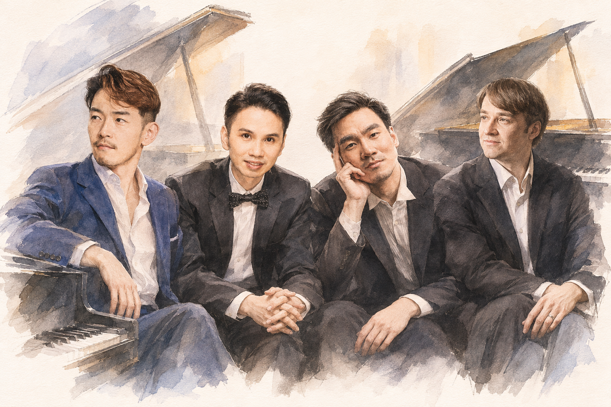
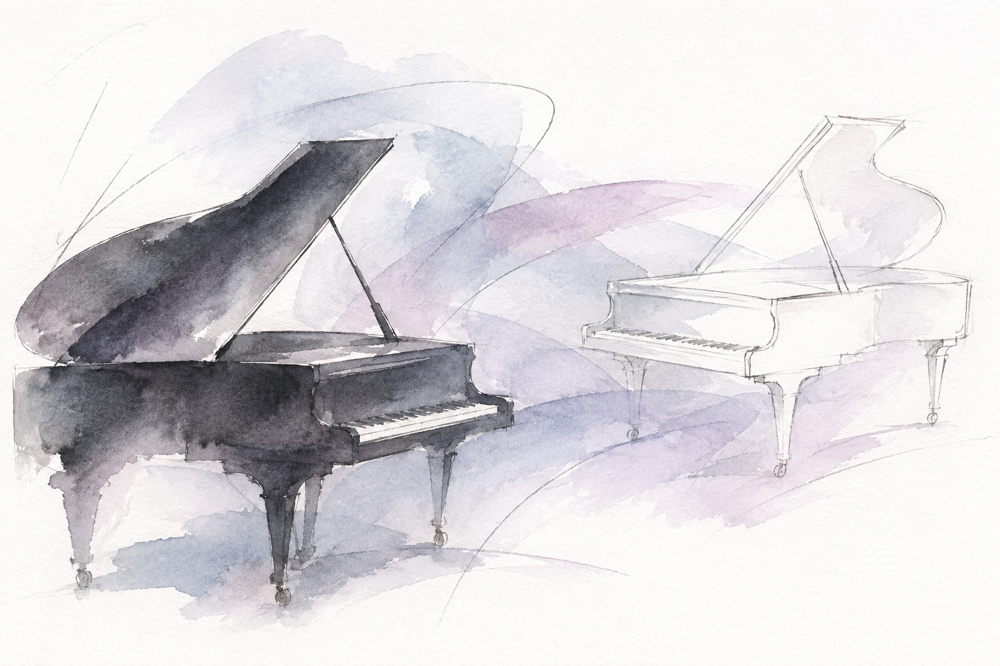
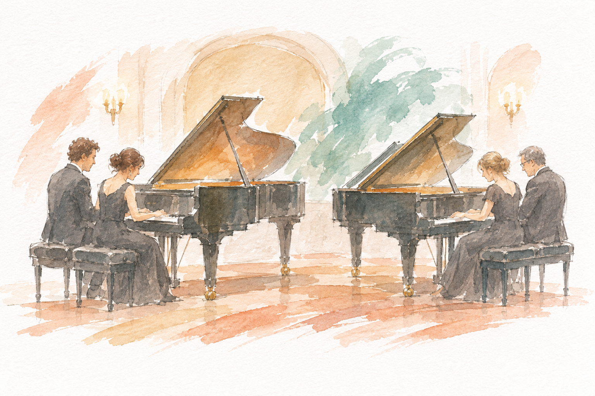
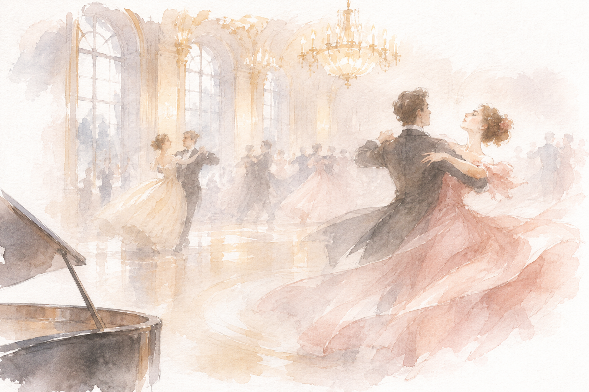
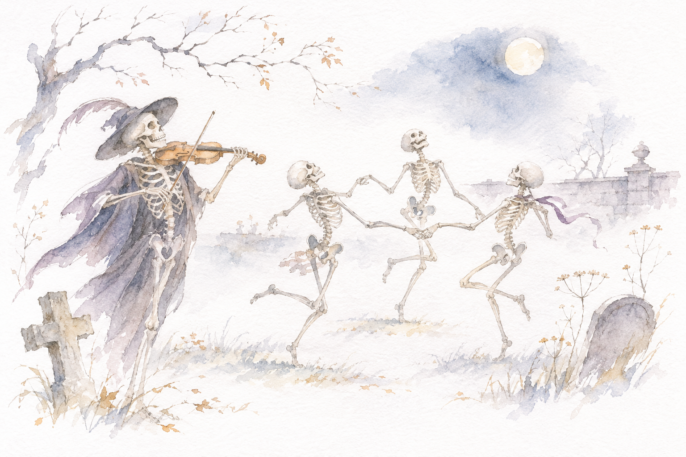

不是把一架鋼琴加倍
雙鋼琴由兩位演奏者各彈一台琴；每人都有完整鍵盤與獨立踏板。兩台琴既能同時處理多條旋律、複雜和聲與不同節奏，也能輪流提出主題。因此，它既能是細緻的室內樂對話，也能產生接近管弦樂的音響。
真正難處不在於音符變多，而是共鳴變多。兩台琴各有自己的延音：一人的踏板與收音會改變另一人的聲音。兩人必須一起決定哪個聲部突出、哪裡略為放慢、下一句由誰帶入；旋律交接要延續前一句的速度與語氣，快速段落則需要共同的重音與脈動。
從手指到音樂廳
按鍵使擊弦機帶動琴槌敲弦；弦的振動經琴橋傳到音板，再由音板與琴體向空間輻射。手指控制擊弦速度與時機，演奏者以聲部平衡、連斷與踏板，讓同一台琴呈現歌唱、鐘聲或打擊般的效果。右踏板增加餘韻與共鳴；左踏板改變琴槌與琴弦的接觸位置，除了弱化音量，也會改變音色；中踏板通常可保留特定音，實際用法依作品而定。
史坦威 D-274 是長 274 公分的演奏型平台鋼琴，為音樂廳的獨奏與合奏而設計。新竹市文化局於 2026 年赴德國漢堡工廠，在九台琴中選出兩台。即使同廠、同型號，琴的音色與觸鍵仍會因木材、琴槌整音與調整狀態而不同；並置時，正好能聽見明亮、厚重與輕柔之間的差別。
舞台上的對話，與四人的聲部網絡
| 編制 | 配置 | 最值得觀察的事 |
|---|---|---|
| 雙鋼琴 | 兩人、兩台琴 | 每人擁有完整音域與獨立踏板；音色、速度和收音都要互相呼應。 |
| 雙鋼琴八手 | 四人、兩台琴 | 每台通常兩人；低音、內聲、旋律與裝飾音被分散，重音、平衡與身體動作更複雜。 |
「第一鋼琴」與「第二鋼琴」是分譜名稱，而不是固定的主角。旋律、伴奏與低音會在兩台琴間轉換；聽熟一段後，把注意力移到另一台琴，往往會發現先前忽略的聲部。八手聯彈在音符密集時尤其考驗平衡：聲響可以非常厚，主線卻仍要清楚。
開始前的吸氣、抬手，或結尾前的一個眼神，都可能是合作訊號。看演出時，除了手指，也可看兩人或四人如何一起開始、放慢與收尾。莫札特的旋律接力通常最清楚；德布西讓和聲與共鳴交疊；拉威爾與八手改編則把音響推向更厚重的層次。
從音樂廳到教室：雙鋼琴的世界
演出場合與改編
雙鋼琴常見於室內樂音樂會、鋼琴音樂節與演奏家合作專場，也適合師生或不同世代的音樂家同台。原創作品充分運用兩套鍵盤的獨立性；改編作品則把管弦樂的弦樂長句、銅管重音與打擊節奏，重新分配到不同音域與觸鍵。
名家演奏可以怎麼看
| 作品 | 演奏者 | 聆聽重點 |
|---|---|---|
| 莫札特 K.448 ↗ | 阿格麗希、巴倫波因 | 清楚句法、明亮音色與敏捷的旋律接力。 |
| 德布西《黑與白》↗ | 阿格麗希、Iddo Bar-Shai | 明暗變化、和聲色彩與兩台琴交錯的節奏。 |
| 拉赫曼尼諾夫《第二號組曲》↗ | 阿格麗希、Nelson Freire | 寬廣旋律、濃厚和聲與華麗音響。 |
| 《交響舞曲》節錄 ↗ | 阿格麗希、Nelson Goerner | 鮮明舞蹈節奏、複雜聲部與強烈推進。 |
| 拉威爾《圓舞曲》↗ | 阿格麗希、Nelson Freire | 三拍子由隱約到鮮明，聲響逐步加厚。 |
Nelson Freire 是巴西鋼琴家，Nelson Goerner 則是阿根廷鋼琴家，兩人並非同一人；Freire 的中文譯名也容易與作曲家 Gabriel Fauré 混淆。
阿格麗希、戲劇與教育
阿格麗希不只以獨奏聞名，也長期投入室內樂與雙鋼琴。她與 Nelson Freire、Alexandre Rabinovitch 等人合作多年；盧加諾計畫中的《Music for Two Pianos》亦收錄她與 Lilya Zilberstein、Gabriela Montero、Polina Leschenko 等不同世代鋼琴家的合作。比較這些影片，可以聽旋律換人時，原本主奏者如何退後、接手者又如何延續樂句。
《交響情人夢》中千秋與野田妹合奏 K.448，是許多人認識雙鋼琴的起點。觀看片段 ↗；莫札特的旋律清楚，速度、樂句或表情只要稍有不同，交接的細節就容易聽出。
在教育裡，作曲主修通常以鋼琴或鍵盤試奏旋律、低音與和聲，訓練視奏、和聲、移調與讀譜。兩台琴可分別試奏聲部、討論和聲與節奏，或一起讀複雜總譜；也常用於鋼琴協奏曲排練：一人彈獨奏聲部，另一人彈樂團縮譜。學生先練習進入時機、速度變化與整體結構，再與樂團合作。從排練到舞台，雙鋼琴的核心都是一邊彈、一邊聽夥伴。
認識四位演奏家

嚴俊傑 Chun Chieh Yen
曾於德國漢諾威隨 Vladimir Krainev 學習，於美國 Colburn School 隨 John Perry 深造。其演出兼及經典、新作與跨領域形式，曾與國家交響樂團錄製陳其鋼《二黃》，亦策畫一天三場不同主題的獨奏會；官方簡介列其為國立臺灣師範大學鋼琴教授與國際大師鋼琴藝術節創辦人，並於 2026 年加入史坦威藝術家行列。可注意樂句如何由輕到強發展，以及旋律交給夥伴後，伴奏如何調整。
盧易之 Yi Chih Lu
求學於維也納音樂暨表演藝術大學與柏林藝術大學。除了蕭邦、布拉姆斯，也長期投入臺灣作曲家作品與民謠改編；活動橫跨獨奏、室內樂與合唱，並任國立臺北藝術大學專任助理教授。可先跟著較長旋律，再聽伴奏如何襯托它；熟悉主題移往不同音域時，也留意觸鍵的改變。
汪奕聞 Evan Wong
第六屆仙台國際音樂大賽銀獎及觀眾獎得主，曾就讀新英格蘭音樂院、茱莉亞音樂學院、西北大學與漢諾威音樂戲劇媒體學院。近年有全德布西節目，並與張玹合作《EARTHING》專輯；現任國立臺北藝術大學專任鋼琴教師。可特別聽弱音裡的旋律，以及短音型如何在兩台琴間接續。
Peter Ovcharov／Ovtcharov
售票頁作 Peter Ovcharov，Allegro Vivo 等資料亦見 Peter Ovtcharov。他曾於薩爾茲堡莫札特音樂大學隨 Karl Heinz Kämmerling 學習，獲國際柴可夫斯基青少年比賽銀牌；Allegro Vivo 簡介列其為首爾延世大學鋼琴教授，並有與大提琴家 Adrian Brendel 等人的室內樂合作。除了快速音群，也可聽內聲與低音，觀察兩台琴同時發聲時層次如何保持清楚。
把作品當成不同的雙鋼琴問題
巴赫：如何聽見多條旋律
巴赫讓數條各有方向的旋律同時進行、彼此模仿並交會；這是對位與複音的世界。先記住一個短音型，再聽它是否換到另一台琴或另一個音域；高音繁忙時，改聽低音如何移動與帶動和聲。現代鋼琴有寬廣動態與延音，也要求演奏者用踏板與音色分開線條。可延伸聽尤森兄弟以現代鋼琴演奏 BWV 1060 第一樂章 ↗ 與 第二樂章 ↗。
莫札特 K.448：如何把接力彈得像一句話
這首奏鳴曲寫於 1781 年維也納，與 Josepha Auernhammer 的合作密切相關。第一樂章以有精神的快板展開，快速音型在兩台琴之間接續；第二樂章放緩，兩台琴輪流帶主線、分擔和聲與內聲；第三樂章讓主要主題反覆回歸。聽點是：速度、力度和句尾是否自然接住？兩人同時奏出重音時，是否整齊而不僵硬？
德布西《黑與白》：如何把踏板變成色彩

作品寫於 1915 年戰時。第一首節奏鮮明、音型交錯，重音不斷移動；第二首紀念陣亡的 Jacques Charlot，低音、停頓和未解決和聲形成沉重感；第三首短促敏捷，動機在兩台琴間接續、重複與改變。注意哪些聲音用踏板相連，哪些地方又收得乾淨；兩人如何在濃厚和聲中維持清晰。
拉威爾《圓舞曲》：如何讓三拍子從霧裡長出來

《圓舞曲》有管弦樂、獨奏與雙鋼琴版本。開頭由低音與零碎片段逐漸拼出三拍子；中段兩台琴輪流演奏舞曲主題，分擔低音與和聲；後段音符加密、重音突出，三拍子由輕快轉為急促。從開頭到結尾追蹤重音如何改變，並聽兩台琴怎麼在高潮裡仍留住旋律、低音和和聲的層次。
八手的兩個例子：土耳其狂想曲與《骷髏之舞》

《土耳其狂想曲》的作者與改編版本仍待正式節目單確認；其他場次曾演 Mozart／V. Gryaznov 的兩台琴八手版本，可能延伸莫札特 K.331 終樂章的土耳其風格。此類改編會改變音域、節奏、和聲與分工：主題有時由一人說，有時由四人同時推進。追問四件事：主題由誰演奏？其他人提供低音、和聲還是打擊感？停頓後如何同時進入？高潮時主題是否還清楚？

《骷髏之舞》從 1872 年歌曲發展為 1874 年交響詩：午夜鐘聲、死神的小提琴、骨骼碰撞與雞啼都能在管弦樂版中辨認。八手改編以不同音域、觸鍵長短與聲部分配，把鐘聲、旋律與敲擊感交給鋼琴。先比較 八手版本 ↗ 與 管弦樂版本 ↗：高音是否像骨骼？延展旋律如何承接小提琴？接近結尾時，聲部與音量如何變薄？
拉赫曼尼諾夫：如何在厚重音響中留住旋律
公開介紹提到拉赫曼尼諾夫而未列曲名。他的鋼琴音樂以寬廣旋律、豐厚和聲與深沉低音著稱；不必追所有音符，先抓旋律，再聽內聲與低音如何累積。延伸作品《第二號雙鋼琴組曲》Op.17 與《交響舞曲》Op.45，正好用來聽兩人如何在高潮中保持聲部層次。
本場音樂會，只是這段對話的一次相遇
本場實際演出的八首作品，已依現場節目單整理於前文。原先預告中提到的德布西《黑與白》、拉威爾《圓舞曲》與聖桑《骷髏之舞》，未列於當日節目單；相關介紹與影片仍保留，供延伸欣賞。
聆聽這些作品時，可以留意旋律如何在演奏者之間交接，以及其他聲部如何提供低音、和聲與節奏。比較不同演奏版本，也能聽出速度、音色與聲部平衡的差異。
資料來源與版本說明
本文依上傳的《新竹黑白極致音樂會導聆》PDF 與 2026 年 11 月 7 日現場節目單整理；作品背景、演奏家資料與延伸影音均保留於原有導聆區。